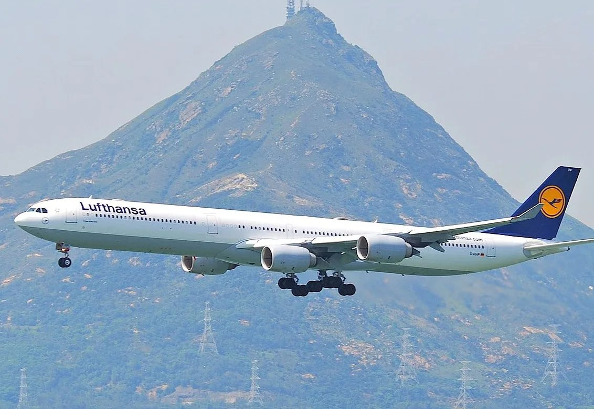
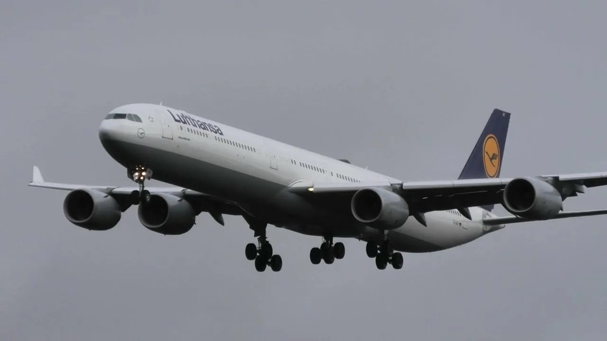
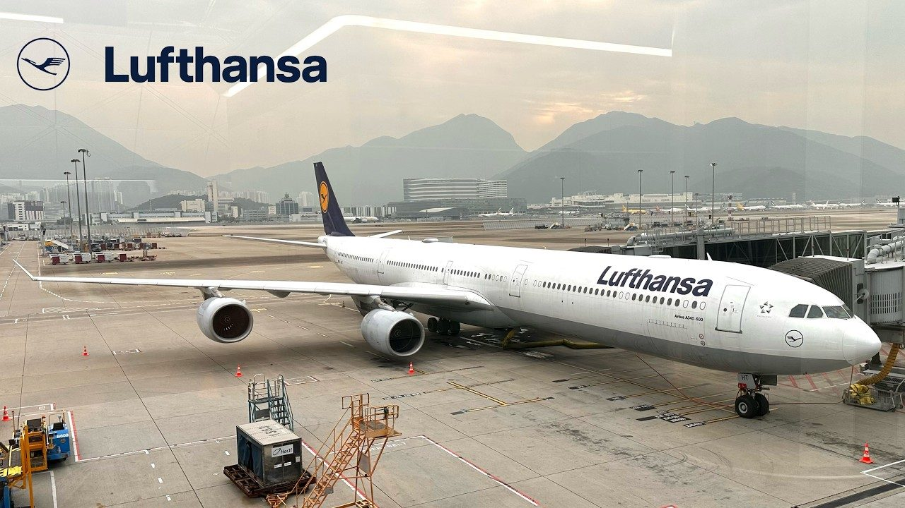
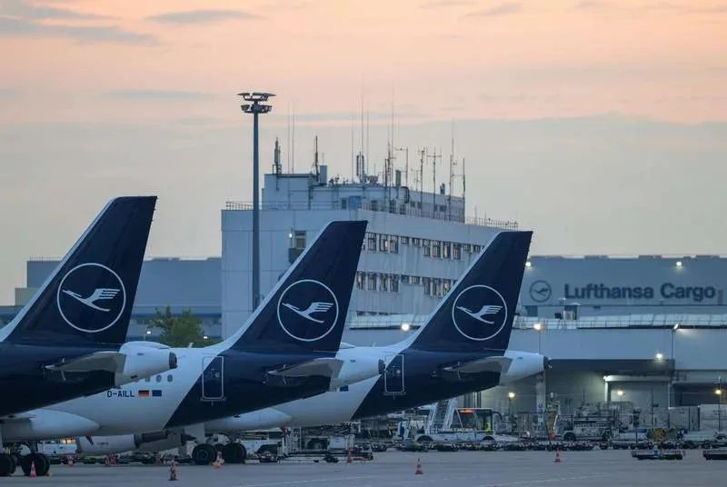

«Летающий карандаш» отлетал своё: последний рейс A340-600

Вечером 18 октября 2026 года из вашингтонского аэропорта Даллес вылетел рейс LH419 на Франкфурт. Внешне это был самый обычный трансатлантический перелёт, но утром 19 октября, когда самолёт коснулся полосы во Франкфурте, закончилась целая эпоха: Lufthansa выполнила последний регулярный пассажирский рейс на Airbus A340-600. Немецкая авиакомпания эксплуатировала этот тип почти 23 года — первый экземпляр она получила 25 ноября 2003 года.

Самый длинный в своё время
A340-600 — удлинённая версия семейства A340, которое Airbus создавал для дальних маршрутов в девяностые. Длина фюзеляжа около 75 метров сделала его самым длинным пассажирским самолётом в мире — этот рекорд держался до появления Boeing 747-8. Из-за длинного и при этом сравнительно узкого фюзеляжа споттеры прозвали машину «летающим карандашом» (flying pencil). Чтобы выдержать вес, конструкторам пришлось добавить под центр фюзеляжа дополнительную четырёхколёсную стойку шасси — ещё одна деталь, по которой «шестисотый» легко узнать на перроне.
Самолёт поднимал больше трёхсот пассажиров и пролетал без посадки свыше 14 тысяч километров. На крыльях стояли четыре двигателя Rolls-Royce Trent 500. В начале двухтысячных такая схема считалась гарантией надёжности на длинных маршрутах над океаном, но именно она в итоге и подвела A340.
Почему четыре двигателя проиграли двум
Когда A340 проектировали, правила ограничивали двухмоторные самолёты: им нельзя было удаляться от запасного аэродрома дальше определённого времени полёта. Со временем двигатели стали надёжнее, нормы смягчились, и двухмоторные Boeing 777, а затем 787 и Airbus A350 начали летать по тем же маршрутам — потребляя заметно меньше топлива. Четыре двигателя означают и больше обслуживания, и больше расходов на каждый рейс.

С коммерческой точки зрения A340-600 так и не стал успехом: всего Airbus построил 97 таких машин, а производство всего семейства A340 завершилось ещё в начале 2010-х. Lufthansa оставалась одним из крупнейших эксплуатантов и держала «шестисотые» в строю дольше многих — сначала из-за задержек с поставками новых самолётов, затем из-за пандемии, когда часть флота отправляли на хранение, а потом возвращали обратно.
Финальное расписание тоже несколько раз переписывали. Изначально рейсы планировались до 24 октября, но в итоге программу сократили, и последним стал именно LH419 из Вашингтона. К этому моменту во флоте оставалось всего четыре A340-600.
Кто придёт на смену

Место «карандаша» в парке Lufthansa займут двухмоторные Airbus A350 и Boeing 787-9. Полностью попрощаться с четырёхмоторными самолётами компания пока не готова: более короткие A340-300 будут летать ещё до 2027–2028 годов, но и их судьба уже решена — как и судьба Boeing 747-400 и A330-200, которые тоже уходят в рамках крупнейшего обновления флота в истории авиакомпании.
Для споттеров уход A340-600 — особенно грустная новость. Это один из немногих самолётов, которые узнаются издалека даже неспециалистом: непропорционально длинный фюзеляж, четыре двигателя и характерный гул на взлёте. Несколько бортов ещё летают у небольших чартерных операторов, поэтому шанс снять «шестисотый» пока остаётся — но с каждым сезоном он становится всё меньше.
Самолёты уходят не потому, что разучились летать, а потому, что считать деньги в авиации научились лучше.
Если у вас есть снимки A340-600 — пишите в гостевую книгу, с удовольствием добавлю ссылки на них.